View examples of the gamma-structure of prime powers for half- and quarter-factorials, and 'exceptional' prime
In the following half-factorials section the 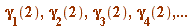 are 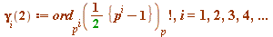 ,
and recall that, when 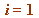,  is simply the familiar 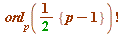 (the order of 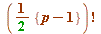 with respect to the modulus
is simply the familiar 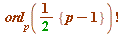 (the order of 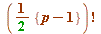 with respect to the modulus  )
)
See the quite different behaviours of the gamma-values:
Half-factorials (just three examples to show all actual (proven) behaviours)
In the following quarter-factorials section the 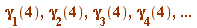 are:
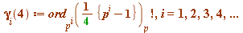 ,
and recall that, when , 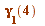is simply the familiar 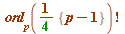 (the order of 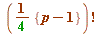 with respect to the modulus  )
)
Quarter-factorials (just three examples to show all apparent behaviours ...)
A brief summary of what computations suggested to be true for these  :
:
- 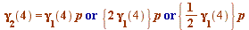
- 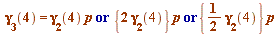
- 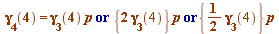
etc
However, this is what a theoretical analysis uncovered, for these same :
- OR 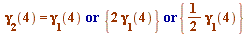
- OR 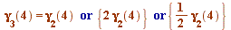
- OR 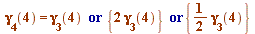
etc
In a pre-computer age one would have been tempted to conjecture that the second alternative (the 'OR') never held ... In fact, in the pre-computer age one might never even have arrived at conjecturing the first alternatives ...
We derived a criterion (too involved to relate here) for the second atlernative to hold, and it transpired that at the prime 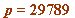, one had:
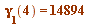 (which is 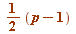)
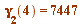 (which is 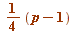)
so that
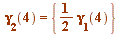
and we deemed this prime to be (in this context) 'exceptional'.
Using the criterion we had obtained we tested (using Maple) to 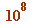, and then, using a very fast program written specially for us by Yves Gallot, we extended the search to , without finding another exceptional prime (for quarter Gauss factorials, that is).
In later years we discovered (with proof) a more beautiful (and much faster) criterion which enabled us to extend the search to 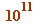, and still no new exceptional prime (so the term 'exceptional' is well-chosen).
I shall give that test later; it came directly - and quite unexpectedly - from our extension of the Gauss binomial coefficient congruence. It's all written up in our Acta Mathematica Hungarica paper:
THE GAUSS-WILSON THEOREM FOR QUARTER INTERVALS,
Acta Mathemetica Hungarica, Vol. 142 (2014), no. 1, 199-230
You should understand that I am keeping my remarks exceptionally brief here, as there is so much more to be said.